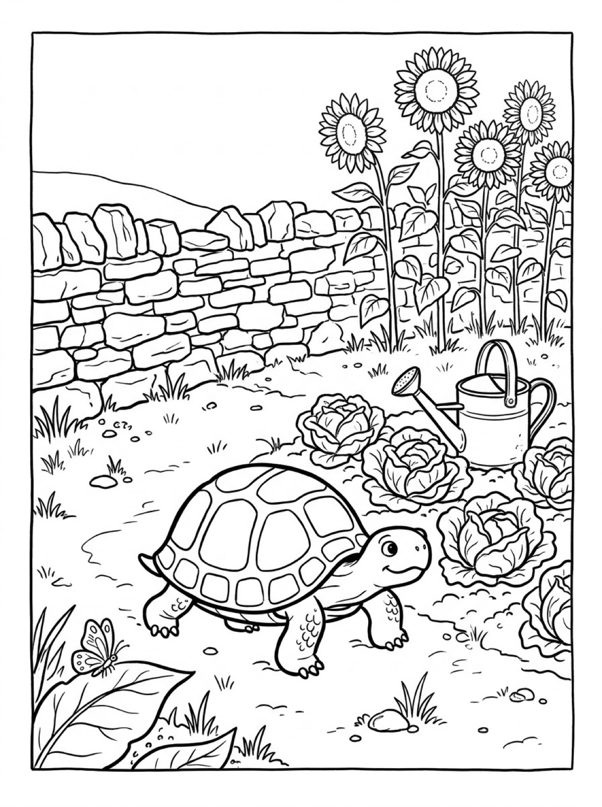
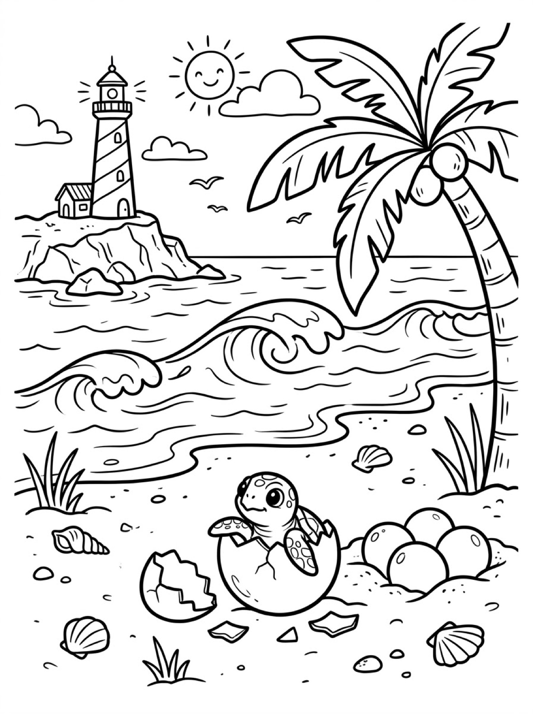

Free Turtle Coloring Pages Sea Turtle, Garden Tortoise & Baby Turtle Printables
These free turtle coloring pages give your child three gentle scenes to color — a sea turtle gliding over a coral reef, a tortoise ambling through a vegetable garden, and a baby sea turtle hatching on a sunny beach. Download the set below, print at home on letter-size paper, and let the coloring fun begin. No signup needed.
Last updated: October 21, 2026
Quick Answer
Yes — this page has three free printable turtle coloring pages: a sea turtle swimming over a coral reef, a land tortoise in a vegetable garden, and a baby sea turtle hatching from its egg on the beach. Bold outlines and big spaces, made for little hands. Download, print on letter-size paper, and hand over the crayons — no signup, no cost.
At a Glance
- Ages: 3–8
- Pages: 3 free printables
- Format: Print at home, letter size
- Cost: Free, no signup
- Supplies: Crayons or markers
- Time: 10–20 minutes
🐢 Sea Turtle Over the Reef Coloring Page

🎨 Download Your Free Sea Turtle Coloring Page
A sea turtle with a beautifully patterned shell gliding over a coral reef, fish overhead and an old anchor resting in the sand — bold outlines, big spaces, zero signup.
⬇️ Download Free Sea Turtle Page 🖨️ Print Sea Turtle Page🎁 Free printable for preschoolers & kids
🐢 Tortoise in the Vegetable Garden Coloring Page

🎨 Download Your Free Garden Tortoise Coloring Page
A friendly land tortoise strolling past the cabbages under tall sunflowers, a watering can waiting nearby — bold outlines, big spaces, zero signup.
⬇️ Download Free Tortoise Page 🖨️ Print Tortoise Page🎁 Free printable for preschoolers & kids
🐢 Baby Sea Turtle Hatching Coloring Page

🎨 Download Your Free Baby Turtle Coloring Page
A baby sea turtle popping out of its egg on the sand, waves rolling in and a lighthouse standing on the point — bold outlines, big spaces, zero signup.
⬇️ Download Free Baby Turtle Page 🖨️ Print Baby Turtle Page🎁 Free printable for preschoolers & kids
More Coloring Pages
Tap any picture to open its theme page and download the free printable.


🐢 How To Use This Page
- Browse the three designs and pick the turtle your child will love most — ocean, garden or beach.
- Tap download or print under that design — the file opens full-size, ready for letter-size paper.
- Print a couple of copies so your child can try the same turtle in different colors.
- Color together with crayons or markers and display the favorites.
🐢 Why Kids Love Turtle Coloring Pages
Turtles are slow, gentle and easy to love — and their shells are a colorer's dream. Every shell is a natural pattern of big sections, so even a first page comes out looking good, and kids can give each section its own color or shade the whole shell in greens and browns. There is something calm about coloring a turtle, too: no rushing, no sharp edges, just steady, satisfying shapes.
This set adds a little discovery to the quiet. Two of the designs live in the ocean and one lives on land, so while your child colors, they are also learning that “turtle” covers more than one kind of animal. Print the same design twice and it never comes out the same — the reef can be sunset orange one day and deep-sea blue the next.
🐢 Meet the Three Turtles on This Page
The sea turtle over the reef. A sea turtle with a swirling patterned shell swims over a busy coral reef, flippers stretched wide. A school of little fish curves above it, and below on the sand rest an old anchor, starfish, shells, sponges and waving seaweed. Sea turtles spend nearly their whole lives in the ocean and paddle with their flippers like wings — the shell pattern makes this the most rewarding page for careful colorers.
The tortoise in the garden. Not every turtle swims. This land tortoise walks on sturdy legs through a vegetable garden, past cabbages and a watering can, under tall sunflowers and a stone wall, with a butterfly resting on a leaf nearby. Tortoises live on land and eat plants — leaves, grasses and vegetables just like the ones in this garden — and that is exactly what makes this page a fun compare-and-contrast moment with the sea turtle.
The baby sea turtle on the beach. Mother sea turtles come ashore and lay their eggs in the sand, and this design shows what happens next: a baby sea turtle hatching out of its egg, with more round eggs waiting beside it in the sand. Shells scatter the beach, gentle waves roll in, and a palm tree and a lighthouse on the point complete the scene. It is the sweetest page in the set — and a true story about how every sea turtle's life begins.
✏️ Turtle Coloring Tips
- Make the shell the star. Each section of the sea turtle's shell can be its own color, or try two greens and alternate. The tortoise's shell has bigger sections — perfect for younger colorers.
- Layer the reef. Corals, sponges and seaweed look wonderful in mixed reds, oranges and purples, with the sand left pale so the anchor and starfish stand out.
- Count as you color. How many fish swim above the sea turtle? How many eggs wait beside the baby? The scenes are full of gentle counting practice.
- Display the finished turtle. A favorite page on the fridge or bedroom door is the fastest way to get asked for the next one.
🐢 Coloring Pages for Different Ages
For ages 3 to 4, start with the garden tortoise. It is one big central shape with a bold outline and chunky shell sections, so little hands can color the tortoise without worrying about the background. Scribbling is fine at this age — they are learning how crayons move across the page and how hard to press.
For ages 5 to 6, the baby sea turtle hatching is the sweet spot. The baby and its egg are still big, friendly shapes, but the shells, waves and eggs add real choices: what color is the sand, the sea, and the lighthouse stripes?
For ages 7 to 8, hand over the sea turtle reef scene. It carries the most detail — coral, sponges, starfish, shells and a whole school of fish — and rewards careful coloring and patience. Older kids often spend the longest on this one.
🐢 More Turtle Fun After Coloring
After coloring, talk about the two worlds on this page. Which turtle would live near your house — the ocean swimmer or the garden walker? What would each one eat for lunch? Write your child's answers on the back of the page (or let them dictate while you write) and the sheet becomes a keepsake instead of a throwaway.
Pair this page with the axolotl coloring pages for a water-animal afternoon: the axolotl lives in lakes, the sea turtle in the ocean, and kids love deciding which underwater scene they like best. The capybara coloring pages make a good land-and-water companion, too — capybaras split their time between the riverbank and the water, just like this set splits between the reef and the garden.
🔗 More Free Printables You’ll Love
- Free Axolotl Coloring Pages A smiling axolotl by its log hideaway, on a pond rock, and under a waterfall.
- Free Capybara Coloring Pages A capybara soaking in a warm pool, a mother with her pups, and a forest walk with birds.
- Free Dog Coloring Pages A sheepdog in the garden, a puppy in the autumn leaves and a Dalmatian on the farm.
- All Free Coloring Pages Browse every free coloring page on the site, organized by theme.
❓ Turtle Coloring Pages FAQ
Are these turtle coloring pages really free?
Yes — all three designs on this page are free original printables from MomYouNeedThis. Download them, print them at home, and color — no signup and no cost.
What ages are these coloring pages best for?
Kids ages 3 to 8 get the most from this set. Younger children can start with the big garden tortoise and color the main shapes, while older kids enjoy the detailed coral reef and beach scenes.
How do I print a coloring page?
Tap the download button under the design you want, then print the file on regular letter-size paper. The print button opens the full-size page in a new tab if you prefer to print from there.
What is the difference between the sea turtle and the tortoise?
The sea turtle in this set lives in the ocean and swims with flippers — but it comes onto the sand to lay its eggs, which is why the third design shows a baby hatching on the beach. The tortoise lives on land, walks on sturdy legs and munches plants like the cabbages in its garden.
Can I make a coloring book from these pages?
Yes — print all three designs, stack them in order, and staple along the left edge. Add a cover sheet with your child's name on it for a finished homemade turtle coloring book.